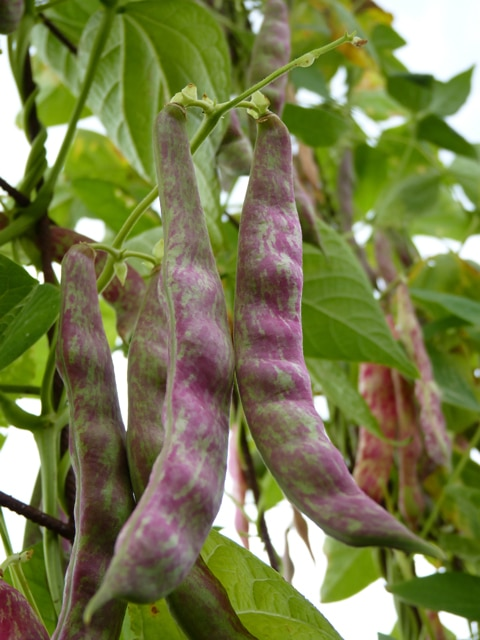
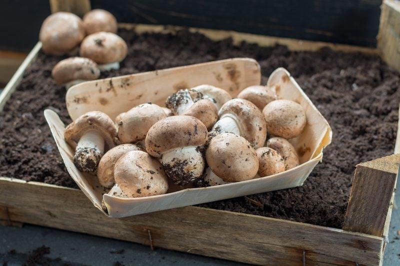

Foods that Shouldn’t be Eaten Raw
The options are almost limitless when it comes to the types of foods you can enjoy in the raw form. Of course, nearly all fruits and vegetables are enjoyable when consumed without cooking. But, there are a few foods that we need to be aware of and shouldn’t be eaten raw. I will be listing some out below, sharing what they are, why we shouldn’t eat them, the effects of eating them raw, and a few options on how to cook them if you are so inclined. I am positive that there are other foods that shouldn’t be eaten raw as well but I am addressing ones that I have received questions on over the years.
Bitter Almonds
All almonds fall into one of two categories, sweet or bitter. In the grocery store, we find sweet almonds which are safe to eat from the get-go. Bitter almonds, on the other hand, are a different story. Though we should never see these in our local stores here in the U.S., it is wise to be aware.
Don’t Eat Raw
- Bitter almonds contain hydrogen cyanide (a highly poisonous gas or volatile liquid with an odor of bitter almonds, made by the action of acids on cyanides 5).
- Bitter almonds grow on trees, and they do not look much different from sweet almonds.
- They tend to be a bit smaller and have pointier ends.
- Bitter almonds usually give off a considerably stronger scent and are often used to make non-edible products like soaps or perfumes.
- Without processing or cooking, raw bitter almonds can be lethal.
Effects if Eaten Raw
- Eating foods that contain high amounts of hydrogen cyanide (also known as prussic acid) may result in some of the following symptoms within minutes: dizziness, headache, nausea, vomiting, rapid breathing, rapid heart rate, restlessness, and weakness.
- Exposure to higher quantities of hydrogen cyanide may cause even more severe health effects, including convulsions, loss of consciousness, low blood pressure, lung injury, slow heart rate, and respiratory failure leading to death. (source)
Young Eggplant
Eggplants are a great source of dietary fiber, which is essential for gastrointestinal health, as well as for regular bowel movements [2]. Fiber bulks up your stool, so they pass more easily through the digestive tract, while also stimulating peristaltic motion, the contraction of the smooth muscles that help food get pushed out of the body. Fiber also stimulates the secretion of gastric juices that facilitate the absorption of nutrients and the processing of foods. I get excited about this stuff!
I wasn’t introduced to eggplants until I entered the raw eating lifestyle. Once I started eating a whole food diet, I soon found myself hanging out in the produce section of the grocery store, oogling over all the fruits and veggies. Suddenly I found myself wanting to try everything! I would always trail my fingers along smooth-skinned eggplants, intrigued but I had no idea what to do with them. I would buy one (starstruck with its rich coloring) bring it home and admire its beauty for days. My fear of not understanding their purpose on my dinner plate caused them to always go rotten. I can’t count how many I have purchased that went to total waste while in my care. (hangs head in shame).
Nowadays, I have one every once in a while, but they’re not my all-time favorite veggie. I do have a raw eggplant recipe on my site and have eaten some raw. We haven’t felt any ill effects from it, but it’s still important to be aware. We now cook our eggplants, but that is our personal decision.
Don’t Eat Raw
- Approach raw eggplant with caution. Young, raw eggplant contains solanine, the same toxin found in raw potatoes.
- Mature eggplants have negligible or no solanine present in them.
- Be sure to remove the leaves and stem before consumption, as these parts contain the most solanine.
- It is recommended to soak them in warm water for a few minutes to reduce the effect of toxins and to also remove the skin.
Effects if Eaten Raw
- Can cause nausea, vomiting, headaches, dizziness, gastrointestinal effects, itchiness, and rashes.
Enjoy Cooked
- Soak in water for a few minutes.
- Remove the stem end off of the eggplant. Peel the eggplant and cut the eggplant into 1-inch cubes.
- Place the eggplant in a colander that is nestled inside of a bowl and sprinkle with salt. Toss to combine, then let the eggplant sit for thirty minutes. This process is known to remove some of the eggplant bitterness and pulls the excess water from it.
- Preheat the oven to 400 degrees (F) with the rack arranged in the middle of the oven.
- Rinse the eggplant under cool water and then dry thoroughly.
- Drizzle with olive oil, and sprinkle with salt and pepper to transform the eggplant into a soft and smoky treat.
- Roast for twenty minutes. Flip and roast until golden-brown and tender, ten to twenty minutes more.
- Use the roasted eggplant cubes in salads or as a simple side dish. You can also mash the cooked eggplant to create a dip.
Dried Beans

Red kidney beans are packed with protein, fiber, and antioxidants, but eating them raw can wreak havoc on your stomach. I remember as a little girl never liking kidney beans. When mom would serve me up a bowl of chili, I would pick out all the kidney beans, which didn’t leave much for me to eat. But as I grew up, I grew out of my dislike for them and now thoroughly enjoy them.
But red kidney beans contain a toxin called phytohaemagglutinin which means you can’t eat them raw. White kidney beans, broad beans, and lima beans also contain this toxin but in a lesser amount.
Don’t Eat Raw
- Uncooked kidney beans contain the toxin phytohaemagglutinin, which is a lectin found in many beans.
- There are other beans that contain phytohaemagglutinin, but red kidney beans have the highest concentration.
Effects if Eaten Raw
- Eating raw beans can cause severe gastrointestinal symptoms, including severe nausea and vomiting. (1)
Enjoy Cooked
- Soak the red kidney beans for up to eight hours.
- Discard soak water and rinse the beans.
- Put the beans in a pan of cold water and bring to a boil.
- Boil them for at least ten minutes to destroy the toxins.
- Simmer them for forty-five minutes to an hour. If the beans are still hard in the center, continue to cook them longer until they have softened.

Mushrooms, wild
There is a large mix of opinions (“studies”) presented on the Internet as to whether or not mushrooms can be enjoyed raw or if they should be cooked. Some experts suggest that edible, everyday mushrooms should be cooked as well as wild ones. It’s also important to eat ONLY organically grown mushrooms because they absorb and concentrate whatever they grow in — good OR bad.
I don’t have a long loving relationship with mushrooms. In fact, I spent most of my life dodging them. My parents, however, loved them, so I was forced to pick out each little mushroom slice from all of my foods. It was a painstaking job but one that I took very seriously. There was no way a mushroom was going to enter my mouth on my watch!
But, about a year after eating a raw diet, I was suddenly stricken with a craving for some mushrooms. I questioned if I had been abducted by aliens, but the truth of the matter was… I WANTED some mushrooms, and I wanted them NOW! Bob about fell off the couch. Without any hesitation, he jumped up, trotted into the kitchen, warmed up a frying pan with olive oil and proceeded to sautee some mushrooms. I was so excited to get that plate in front of me. I took one bite, and I have never looked back. Mushrooms (cooked mushrooms) and I are now besties.
Don’t Eat Raw**
- Wild mushrooms have very tough cell walls (called chitin) and are essentially indigestible if you don’t cook them.
- They contain small amounts of toxins, including some compounds that are considered carcinogens. These are destroyed by cooking them thoroughly. Broiling or grilling is best.
- Thoroughly heating them releases the nutrients they contain, including protein, B vitamins, and minerals, as well as a wide range of novel compounds not found in other foods.
- Avoid foraging for mushrooms in the wild unless you are absolutely sure you know what you’re picking. There are many toxic mushrooms, and it’s easy to get them confused unless you have a lot of experience and know what to pick.
- **Some people choose to eat the following mushrooms raw; whites, crimini, enokis, and portabellas. I have in the past but only after they have been marinated in a liquid that consists of an acid, a fat, spices, and herbs.
Effects if Eaten Raw
- May cause digestive upset for some people due to the chitin, a material that is not digestible.
Enjoy Cooked
- Mushrooms can be prepared in a variety of different ways, but some cooking techniques can make them lose their health appeal. A study, published in the International Journal of Food Sciences and Nutrition tested various cooking methods to see which helped the mushrooms maintain their nutrients. They used a white button, shiitake, oyster, and king oyster mushrooms in their study. They showed that grilling and microwaving (not a fan of) were the two most efficient ways of retaining their nutrients. “When mushrooms were cooked by microwave or grill, the content of polyphenol and antioxidant activity increased significantly, and there are no significant losses in nutritional value.”
Potatoes
Potatoes are grown in cooler climates and are often thought of as roots because they usually grow in the ground. But technically they are a starchy tuber. They grow on short branches called stolons from the lower parts of potato plants. By the way, though potato vegetable plants also flower and produce small, many-seeded berries like cherry tomatoes, all parts of the plant are poisonous if eaten. Except for the tubers.
My step-dad, David, has an amazing green thumb. I have talked about his talents before. There was one particular year while living in Alaska when my dad had a full-blown garden growing. He invited me over to help harvest the root veggies. I am always game to partake in such activities. I was assigned to the potato section, and I tell you what, there is something so exciting when it comes to digging up earthbound treasures.
I was like a child in a candy store with no adults present. I was driving my hands into the cool rich soil, my fingers searching to find a Yukon Gold potato. When I finally had one, I held it up high and squealed with joy. I did this with each discovery. I think my dad was convinced that I was on some questionable medication, but I wasn’t. I was high on Mother Earth and her bountiful gifts. I will never forget that joyful experience.
Don’t Eat Raw
- Raw potatoes are potentially toxic because of a compound called solanine. Even in small amounts, solanine is highly toxic, according to MedlinePlus.
- Potatoes with just a little green under the skin have a higher concentration of solanine.
- ALL parts of the plant (except the potatoes themselves) are poisonous if eaten.
Effects if Eaten Raw
- Potato poisoning may cause stomach pain, headache, and even paralysis.
- Eating potatoes raw can cause bloating and undesirable gastrointestinal effects because potatoes contain starches that are resistant to being digested.
Enjoy Cooked
- Bake in the oven, preheat the oven to 425°F.
- Rub the potatoes with olive oil, sprinkle them with salt and pepper, and prick them with the tines of a fork.
- Lay them directly on the oven rack or place them on a baking sheet.
- Cook for forty-five minutes to an hour, until the fork meets no resistance when poked into the potato.
- Potatoes are considered a restain starch which has been shown to improved insulin sensitivity, lower blood sugar levels, reduced appetite and various benefits for digestion. You can read more about it (here). When cooking potatoes it is best to cook them, chill them, then gently reheat. The cooling turns some of the digestible starches into resistant starches.
Rhubarb Leaves
I am sure that you have all enjoyed, seen, or at least heard of rhubarb. They are slender pale green and red stalks, accompanied by large, scalloped green leaves. You can eat the stalk raw; many find it excruciatingly sour but it can be prepared in many delicious ways. I grew up eating the stalks dipped in sugar. As soon as my Great Grandmother spotted me out in the garden, she knew that I was heading straight for the rhubarb. No sooner would I have one selected that Great Grandma would be coming out the door with the sugar jar in hand. She would pour a little sugar in the palm of my hand and I would dip the stalk into it with each bite. It never dawned on me to eat the leaves (thank goodness); I always tied them on my head to wear as a hat. Fashion was my thing. haha
Don’t Eat Raw
- You might have heard that rhubarb is poisonous when raw, but it’s the leaves you should avoid at all costs. Perhaps this is why we never see them attached to rhubarb in the grocery store.
Effects if Eaten Raw
- The leaves contain insanely high levels of a toxin called oxalic acid, which when consumed can cause serious kidney damage, trouble breathing, diarrhea, eye pain, and even seizures.
Taro Root & Leaves
Think of taro root as the potato’s healthier cousin. It has three times more fiber than a potato and is a good source of potassium, vitamin C, calcium, vitamin E, B vitamins, and trace minerals. (1) It has a much lower Glycemic Index than a potato, which means that blood sugar levels don’t rise rapidly, making it a more suitable food for diabetics and individuals with blood disorders. The tuber or underground stems of the taro are brown and round. The leaves are long and floppy, wider at the top and tapering down to a narrow blade.
The leaves of the taro plant are no nutritional slumps, either. They taste sort of like spinach but have a heartier texture. They’re also good sources of fiber, vitamins A and C, and protein. (2) The taro root is said to have a mild flavor that takes on more of a nuttiness once cooked, a characteristic that makes the taro extremely versatile for both sweet and savory dishes.
Don’t Eat Raw
- People eat both the leaves and roots of the taro plant, but you shouldn’t eat either one raw.
- Raw taro contains calcium oxalate. Think of it as tiny blades that cover the leaves and root of the taro plant. When you eat uncooked taro, the calcium oxalate makes your mouth feel numb. If you have too much, you’ll feel like you’re choking.
Effects if Eaten Raw
- A small dose of calcium oxalate is enough to cause intense sensations of burning in the mouth and throat, swelling, and choking.
- Calcium oxalate also contributes to kidney stones. (3)
- Because this compound can also irritate your skin, you should wear gloves when you’re handling the raw plant.
Enjoy Cooked
- You can boil, steam, roast, and mash the root, much like a potato.
- To prepare taro root, wear gloves and scrub the taro roots clean under running water.
- Peel each root using a vegetable peeler. Cut into quarters or 2-inch chunks.
- Fill a medium-size cooking pan with water, adding a sprinkle of salt. Boil the water on the stove.
- Place all the taro root pieces into the water and boil the taro root for about fifteen minutes. Stick a fork into the root to check the softness. If soft, drain the taro roots in a colander over the sink.
- The leaf must be boiled at least forty-five minutes over low heat.
- The taro root itself is also considered a resistant starch (just as the potato is, indicated above). When cooking, it is best to cook them, chill them, then gently reheat. The cooling turns some of the digestible starches into resistant starches.
- You can read more about it (here).
Yucca Root (cassava root)
Yucca/cassava is a nutty-flavored, starchy root vegetable or tuber. It is usually grown in tropical climates. The roots are large, can weigh several pounds, have tough, scaly and brown skin and starchy, white “meat” inside. I first spotted yucca in a gourmet store up in Anchorage, Alaska. I was at one end of the produce section, and Bob was at the other. I spotted the foreign veggie, held it up high, and hollered to Bob, “YUCCA!” Bob hollered back, “What? Why?” I hollered even louder, “YUCCA!” Bob responded, “Well don’t touch it then!” I tried again, “YUCCA!” To which Bob replied, “Then don’t buy it!” Finally, we met in the middle, and I handed Bob the root. He looked down and said, “What is that?” I sweetly responded as I traced the floor tile with my toe and in a whispering voice I said, “Yucca.” That was our only experience with Yucca.
Don’t Eat Raw
- Yucca root is packed with vitamins and minerals, but the leaves and roots of raw yucca contain cyanogenic glycosides, chemicals that release cyanide when eaten.
Effects if Eaten Raw
- May impair thyroid and nerve function.
- Associated with paralysis and organ damage, and can be fatal (1, 2).
Enjoy Cooked
- Peel it – The peel of cassava root contains most of the cyanide-producing compounds.
- Soak it – Soaking cassava in water for 48–60 hours before it is cooked and eaten may reduce the number of harmful chemicals it contains.
- Cook it – Since the harmful chemicals are found in raw cassava, it’s essential to cook it thoroughly by boiling, roasting, or baking.
- Just like the potato and taro root, yucca root is a resistant starch.
- When cooking, it is best to cook them, chill them, then gently reheat. The cooling turns some of the digestible starches into resistant starches.
- You can read more about it (here).
Disclaimer
This website is not intended to provide medical advice. All content, including text, graphics, images, and information available on this site is for general informational, entertainment, and educational purposes only. The content is not intended to be a substitute for professional diagnosis or treatment. The author of this site is not responsible for any adverse effects that may occur from the application of the information on this site. You are encouraged to make your own healthcare decisions, based on your research and in partnership with a qualified healthcare professional.
© AmieSue.com